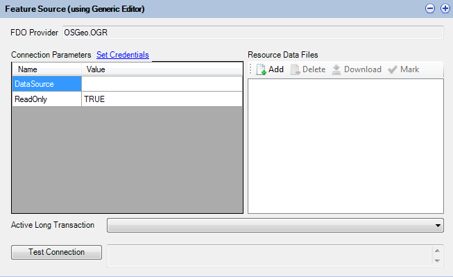

Understanding Feature Sources
As already covered, Feature Sources describe a FDO connection to a particular spatial or non-spatial data store. FDO technology provides a generic, command-based interface to a number of back-end data source technologies for storing, retrieving, updating, and analyzing GIS (Geographic Information System) data.
Support for various data sources exists in the form of FDO providers.
File-based Data
Spatial data exists in many different forms and data formats. MapGuide supports various file-based data sources out of the box:
- SDF using the SDF FDO provider
- SHP using the SHP FDO provider
- SQLite using the SQLite FDO provider (for MapGuide Open Source 2.2 or newer)
- MS Access Databases and Excel Spreadsheets using the ODBC provider.
- Various other file formats using the OGR FDO provider.
Support for other file formats exist via third party FDO providers.
Relational Data
MapGuide also supports various relational data sources
- SQL Server
- MySQL
- Oracle
- PostgreSQL (for MapGuide Open Source 2.2 or newer)
Support for other relational databases exist via third party FDO providers.
Raster Data
MapGuide also supports raster data sources via the GDAL FDO provider.
The Generic Editor
Maestro provides a specialized feature source editor for the most frequently used FDO providers. For third party or other unrecognised FDO providers, a generic editor is available to configure the connection parameters to your particular data store.

The Generic Feature Source Editor
If a connection property involves an embedded data file, upload the file first as a Resource Data File and you can reference it
by prefixing %MG_DATA_FILE_PATH% in front of the resource data file name.
Coordinate System Overrides
The Coordinate System Overrides section of the editor allows you to override the coordinate systems of this Feature Source.

The Coordinate System Overrides Editor
For example, a Feature Source may report an Arbitrary or incorrectly specified coordinate system, but the actual geometries themselves have real world geographical relevance. You can use this editor to replace this Arbitrary coordinate system with a different coordinate system.
This is important if you require MapGuide to transform data. The source and target coordinate systems need to be correct. This override mechanism allows you to fix the source side of the transformation.
Joins and Extensions
The Joins and Extensions section of the editor allows you to define Extended Feature Classes.

The Joins and Extensions Editor
Extended Feature Classes extend a given feature class in the edited feature source with:
- Extra calculated properties derived from FDO expressions
- Extra properties from another Feature Class in another Feature Source by performing a Feature Join
If extending a Feature Class via a Feature Join you may choose the type of join to perform:
- Left Outer
- Right Outer
- Inner
Also you have to specify at least one property from both participating Feature Classes that will be joined on.
Finally you can force a 1-to-1 cardinality to avoid redundant secondary Feature Class attributes for each primary feature or vice versa.
Note
Feature Join performance is generally bad, especially when the join is performed across Feature Classes from different Feature Sources for different FDO providers. Consider doing joins at the database level, outside of MapGuide
Note
For best Feature Join performance, both sides of the join should support sortable query results. Providers that support sortable query results include:
- SDF (single property only)
- SHP (single property only)
- Any of the RDBMS providers (ODBC, SQL Server, MySQL, PostgreSQL, Oracle) Any join that involves any of the above providers on both sides on a single property should have generally decent performance. Still doing these joins at the datastore level is preferable
Specifying Credentials
Some Feature Source editors (generic or specialized) support entering user login credentials. The specialized editors will automatically substitute your entered credentails with the %MG_USERNAME% and %MG_PASSWORD% placeholder tokens, with the actual values encrypted and stored into the MG_USER_CREDENTIALS resource data item.
For the Generic Editor, a Set Credentials link allows you to specify credentials in a secure manner.

Specifying Credentials in the Generic editor
Note
Versions of Maestro before 4.0 did not support these feature and credentials were stored plaintext in the Resource XML documents themselves. It is strongly advised to run a validation process (Resource Validation) on your repository, which will pick up such resources (which will be flagged as warnings in the Validation Results dialog). You should re-open these resources in a newer version of Maestro and apply credentials in a secured manner.
Other Feature Source Options
All Feature Source editors whether the generic one or a specialized one will provide extra options for you which will be enabled or disabled based on the underlying capabilities of the FDO provider.

Additional Feature Source Options
Local Preview opens the Local Feature Source Preview on this Feature Source allowing you to view the strucutre of this Feature Source and be able to do basic data queries on the Feature Source. See Using Local Feature Source Preview for more information.
Edit Configuration Document opens the associated configuration XML document. Most specialized Feature Source editors that support configuration will build this document for you. This feature allows you to look at the document itself and if required, edit the contents by hand
Spatial Contexts displays the spatial contexts of the Feature Source
Raster Configuration
When creating Raster Feature Sources (with the GDAL provider), it is generally advised to use the Composite mode and build a configuration document by adding in the individual raster images. Adding in each raster image will update the configuration document with the details from that raster image such as the bounds and the physical file path.

GDAL Feature Source editor in composite mode
The configuration document serves as a Raster Tile Index and is referred to by MapGuide when doing raster data queries when rendering maps. The raster queries will use the bounds information recorded in the configuration document to grab the closest matching raster images for resampling. This is a much faster way for MapGuide to access raster imagery.
After you have built your raster configuration document, be sure to check the overall final extents by clicking Edit Configuration Document under Other Options (Understanding Feature Sources) to see the configuration document XML

Overall extents in the configuration document
This is the value used for previewing any layers you build off of this Feature Source and incorrect extents can cause massive performance issues.
Note
After you have built your raster configuration document, you should also apply Understanding Feature Sources to ensure MapGuide will be reading this data under the correct coordinate system